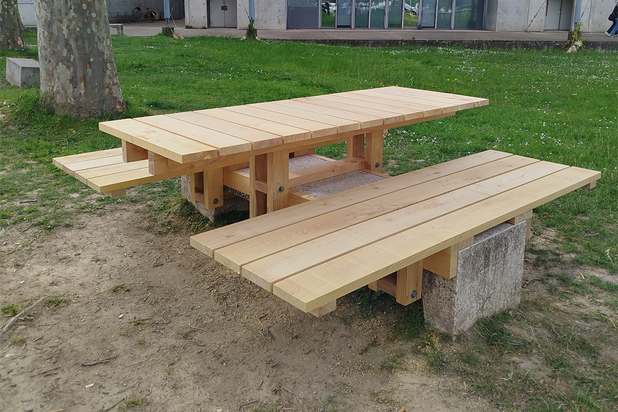

Projets d’architecture
Recherches, maquettes et expérimentations autour de l’espace, du matériau et de la structure.

Lumière Légère, Obscurité Douce
Premier projet de première année : Implanter une maison individuelle sur un terrain en pente, avec une contrainte d’emprise au sol limitée.

Sandwich
Transformation d’un banc en béton existant en une table de pique-nique durable à l’aide d’une structure en bois. Ou comment passer des plans à la réalité en passant par la modélisation 3D et les maquettes
Intéressé aussi par mes projets d’ingénierie ?
Voir les projets d’ingénierie